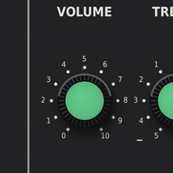
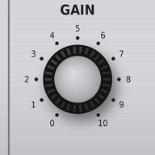
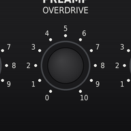
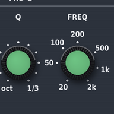
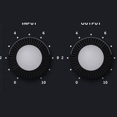

Verstärker-Simulatoren
Verstärker mit Bauteilwerten aus den Original-Schaltplänen und exakter Schaltungsberechnung. Auf dem Handy lassen sich die Seiten zum Startbildschirm hinzufügen und laufen dann auch offline.
Lametta B100-II KlangreglerTreble, Middle, Bass des Transistor-Bass-Combos, geprüft gegen die Werkskurve, mit Anhören eigener Audiodateien.
Lametta B100-IIIDer Transistor-Bassverstärker nach dem Service Manual (1984): Eingangsstufe, aktive Klangregelung mit Transistor-Gyratoren, zwei vollparametrische Entzerrer mit PRESET LEVEL (ein- und ausschaltbar wie mit dem Fußschalter), 100-W-Endstufe mit Begrenzung; ohne Lautsprecher. Geprüft gegen die Spezifikation des Manuals.
AmpFett SVT-CLDer 300-W-Röhren-Bassverstärker nach dem Service Manual des Ampeg SVT-CL: Eingänge 0 dB / −15 dB, Vorstufe mit 12AX7, Klangregelung mit fünfstufiger Mittenfrequenz, ULTRA HI/LO, Phasenumkehr, Treiber mit 12AU7, Endstufe mit sechs 6550, Ausgangsübertrager (4 oder 2 Ω) und Netzteil, alles in einer Rechnung; ohne Lautsprecher. Geprüft gegen die Signalpegel im Plan und die Herstellerangaben.
Loldano SLO-100Der 100-W-Röhren-Gitarrenverstärker nach dem Schaltplan des Soldano SLO-100: NORMAL-Kanal mit BRIGHT und CLEAN/CRUNCH, OVERDRIVE-Kanal mit der „kalten“ Stufe, Kanalumschaltung über Fotowiderstände, Klangregelung, zwei MASTER, Phasenumkehr, vier 6L6GC, Ausgangsübertrager mit Gegenkopplung und PRESENCE, Netzteil und ein Lautsprecher als Last, alles in einer Rechnung; ohne Boxensimulation. Geprüft gegen die Spannungen im Plan.
Wien EQKein Verstärker, sondern ein Fünfband-Equalizer mit Wien-Brücken nach den veröffentlichten Angaben zum adt-audio TM205 (eigener Entwurf, kein Schaltplan): LOW und HIGH mit je zwei Tasten, drei vollparametrische Mittenbänder von 20 Hz bis 25 kHz mit 5 Oktaven bis Terz Bandbreite, EQ ON, Regelbereich ±6/±12/±20 dB.
AmpFett 76Kein Verstärker, sondern ein FET-Kompressor: Nachbau des UREI 1176LN nach dem Schaltplan (INPUT, OUTPUT, ATTACK, RELEASE, vier RATIO-Tasten, auch alle zugleich), dazu stufenlose Ratio, DRY, Hochpass in der Seitenkette und eine zweite Stufe nach dem Vorbild des Origin Effects Cali76. Mit Kennlinie und Anzeige der Gain Reduction.Für die DAW
Laney AOR 50 Preamp als DAW-PluginDerselbe Rechenkern wie der Simulator für Linux x86-64 (REAPER 7, Bitwig, Ardour, Qtractor): Frontplatte zum Drehen, Röhrenverzerrung mit bis zu 8-facher Überabtastung, Stereo, Frequenzgang, Röhrenwahl, Lautsprecher, Umbauideen „Sanft" und „Später", Federhall (ab 3.35; Nichtlinearität des Tanks ab 3.37 mit dem Regler REVERB TANK einstellbar).
CLAP herunterladenVST3 herunterladen
Version 3.45 (Gitterstrom je Röhrentyp, unter 0,15 dB je Band; seit 3.44 Wahlröhren 12AT7, 12AU7, 12AY7 mit Modellen aus Kennlinienmessungen, Grundstellung klingt gleich; seit 3.43 Poti-Kennlinien berichtigt: Volumes, Level, Master, Treble und Bass sind logarithmisch, Middle, Presence und Reverb linear – gleiche Reglerstellung klingt anders als bis 3.42, gespeicherte Projekte werden nicht umgerechnet; seit 3.42 Wertanzeige am Knopf abschaltbar; FX LOOP ohne Knacks; seit 3.40 in allen Plugins: INPUT ist die Spitze deines Spiels in mV; das Plugin merkt sich die höchste Spitze der Spur und gleicht daran an, wie die Web-Seiten mit der geladenen Datei; ältere Projekte behalten „mV bei 0 dBFS“) · je ZIP mit Anleitung (README.txt) · CLAP:
Laney_AOR50.clap nach ~/.clap · VST3: den Ordner Laney_AOR50.vst3 nach ~/.vst3 · danach REAPER neu starten. Beide Formate klingen gleich; ein Format genügt. Braucht glibc 2.38 oder neuer (Ubuntu 24.04, Debian 13 oder vergleichbar).
Lametta B100-II Bass Amp als DAW-PluginDas PA-Board des Transistor-Combos (HIGH/LOW-Buchse, Volume, Treble, Middle, Bass, 5-Band-Equalizer), optional mit Endstufe (MA-Board, Begrenzung) und 15"-Lautsprecher; Frontplatte zum Drehen, Stereo, Frequenzgang.
CLAP herunterladenVST3 herunterladen
Version 1.21 (heißt jetzt Lametta B100-II, vorher Yamaha B100-II; Klang unverändert; Projekte mit dem alten Plugin finden es nicht mehr) · Installation wie beim Laney (
Lametta_B100II.clap bzw. Ordner Lametta_B100II.vst3). Gleiche Systemvoraussetzungen.
AmpFett B-15NF Bass Amp als DAW-PluginDer ganze Röhrenverstärker nach Werksschaltplan wie auf der Web-Seite: beide Kanäle mit den drei Eingangsbuchsen, Phasenumkehr mit Gegenkopplung, Endstufe mit 6L6GC, Netzteil mit 5AR4, Standby, optional Lautsprecher; Frontplatte zum Drehen, Aussteuerungsanzeige, Frequenzgang, Stereo, bis zu 4-fache Überabtastung.
CLAP herunterladenVST3 herunterladen
Version 1.25 (Gitterstrom je Röhrentyp, 6L6GC nach Datenblatt; seit 1.24 6L6GC mit dem scharfen Knie der Strahltetrode nach einer vermessenen Röhre; sauber gleich, hart angesteuert unter 0,1 dB je Band anders; seit 1.22 Wertanzeige am Knopf abschaltbar; Schalter ohne Knacks, Drehen an Reglern braucht weniger Rechenzeit; seit 1.20 Kernwechsel und Neustart ohne Knacks) · Installation wie beim Laney (
AmpFett_B15NF.clap bzw. Ordner AmpFett_B15NF.vst3). Gleiche Systemvoraussetzungen. Rechnet die ganze Schaltung samt Netzteil in jedem Abtastwert: je nach Rechner ein Viertel bis die Hälfte eines Prozessorkerns bei 48 kHz mit vollem Netzteil, mit dem einfachen (Grundstellung ab 1.15, ohne Brummen) etwa ein Fünftel weniger.
GK 800RB Bass Amp als DAW-PluginDer Transistor-Bassverstärker nach dem Service-Manual wie auf der Web-Seite: Vorstufe als Schaltung mit allen Schaltern, Klangreglern, BOOST (J113) und Bi-Amp-Weiche, beide Endstufen mit Begrenzung, optional Lautsprecher oder DIRECT OUT; Frontplatte zum Drehen, Aussteuerungsanzeige, Frequenzgang, Stereo, bis zu 4-fache Überabtastung.
CLAP herunterladenVST3 herunterladen
Version 1.7 (Wertanzeige am Knopf abschaltbar; Schalter ohne Knacks, Drehen an Reglern braucht weniger Rechenzeit; seit 1.5 Kernwechsel ohne Knacks) · Installation wie beim Laney (
GK_800RB.clap bzw. Ordner GK_800RB.vst3). Gleiche Systemvoraussetzungen. Braucht etwa ein Zehntel eines Prozessorkerns bei 48 kHz und 1x, bei 2x (Grundstellung) ein Fünftel.
Lametta G100-212II Guitar Amp als DAW-PluginDer Transistor-Gitarrenverstärker nach dem Service Manual wie auf der Web-Seite: beide Kanäle als Schaltung mit Zugschaltern, A/B-Taste, HIGH/LOW-Buchse, parametrischem EQ und Federhall (ab 1.1; ab 1.4 Nichtlinearität mit dem Regler REVERB TANK von linear bis sehr stark), Endstufe mit Begrenzung, wahlweise mit den beiden Lautsprechern (ab 1.10: 2 × Celestion G12T-75 in der offenen Box); Frontplatte zum Drehen, Aussteuerungsanzeige, Frequenzgang, Stereo, bis zu 4-fache Überabtastung.
CLAP herunterladenVST3 herunterladen
Version 1.12 (heißt jetzt Lametta G100-212II, vorher Yamaha G100-212II; Klang unverändert; Projekte mit dem alten Plugin finden es nicht mehr; seit 1.11 Wertanzeige am Knopf abschaltbar; Schalter SPEAKER: Lautsprecher 2 × G12T-75 in der offenen Box, ausgeschaltet klingt alles wie 1.9; seit 1.9 Schalter ohne Knacks und weniger Rechenzeit beim Drehen) · Installation wie beim Laney (
Lametta_G100.clap bzw. Ordner Lametta_G100.vst3). Gleiche Systemvoraussetzungen. Braucht etwa ein Achtel eines Prozessorkerns bei 48 kHz und 1x, bei 2x (Grundstellung) knapp ein Drittel (seit 1.1 mit Hall, ab 1.5 etwa ein Drittel weniger als vorher).
Lametta B100-III Bass Amp als DAW-PluginDer Transistor-Bassverstärker nach dem Service Manual wie auf der Web-Seite: Eingangsstufe, aktive Klangregelung, zwei parametrische Entzerrer mit PRESET LEVEL und Ein/Aus wie mit dem Fußschalter, Endstufe mit Begrenzung; Frontplatte zum Drehen, Aussteuerungsanzeige, Frequenzgang, Stereo, 2- oder 4-fache Überabtastung. Ohne Lautsprecher.
CLAP herunterladenVST3 herunterladen
Version 1.8 (heißt jetzt Lametta B100-III, vorher Yamaha B100-III; Klang unverändert; Projekte mit dem alten Plugin finden es nicht mehr; seit 1.7 Wertanzeige am Knopf abschaltbar; Schalter ohne Knacks, Drehen an Reglern braucht weniger Rechenzeit; seit 1.5 Kernwechsel ohne Knacks) · Installation wie beim Laney (
Lametta_B100III.clap bzw. Ordner Lametta_B100III.vst3). Gleiche Systemvoraussetzungen. Braucht bei 48 kHz und 2x (Grundstellung) etwa ein Fünftel bis ein Drittel eines Prozessorkerns (ab 1.2 etwa 38 % weniger als vorher).
AmpFett SVT-CL Bass Amp als DAW-PluginDer ganze Röhren-Bassverstärker wie auf der Web-Seite: beide Eingänge, Vorstufe mit Klangregelung, MIDRANGE mit fünf Frequenzen, ULTRA HI/LO, Endstufe mit sechs 6550, Ausgangsübertrager mit 4- und 2-Ω-Abgriff, Netzteil; Frontplatte zum Drehen, Aussteuerungsanzeige, Frequenzgang, Stereo. Ohne Lautsprecher.
CLAP herunterladenVST3 herunterladen
Version 1.11 (Gitterstrom je Röhrentyp; seit 1.10 12AU7 nach einer vermessenen Röhre, 6550 mit dem Knie der Strahltetrode, Ruhestrom neu geeicht; Pegel um 0,2–0,3 dB anders; seit 1.9 Wertanzeige am Knopf abschaltbar; Schalter ohne Knacks, Drehen an Reglern braucht weniger Rechenzeit; seit 1.7 Kernwechsel und Neustart ohne Knacks; seit 1.5 TUBE MISMATCH; abschaltbar: Netzteil nach Plan mit Gleichrichtern und Brumm, Last des BAL-OUT-Übertragers) · Installation wie beim Laney (
AmpFett_SVTCL.clap bzw. Ordner AmpFett_SVTCL.vst3). Gleiche Systemvoraussetzungen. Rechnet die ganze Schaltung in jedem Abtastwert: etwa das 1,5-Fache des AmpFett B-15NF, grob 40 bis 75 % eines Prozessorkerns bei 48 kHz.
Loldano SLO-100 Guitar Amp als DAW-PluginDer ganze Röhren-Gitarrenverstärker wie auf der Web-Seite: beide Kanäle mit eigenen PREAMP- und MASTER-Reglern, BRIGHT, CLEAN/CRUNCH, Klangregelung, PRESENCE, Endstufe mit vier 6L6GC, Ausgangsübertrager, Netzteil, Lautsprecherlast; Frontplatte zum Drehen, Aussteuerungsanzeige, Frequenzgang, Stereo, 2- oder 4-fache Überabtastung. Ohne Boxensimulation.
CLAP herunterladenVST3 herunterladen
Version 1.1 (erste ausgelieferte Fassung; etwa 7 bis 11 % weniger Rechenzeit als 1.0; ein Abgleich gegen den Klang eines echten Geräts steht aus) · Installation wie beim Laney (
Loldano_SLO100.clap bzw. Ordner Loldano_SLO100.vst3). Gleiche Systemvoraussetzungen. Rechnet die ganze Schaltung in jedem Abtastwert und braucht viel Rechenzeit: bei 48 kHz und 1x etwa so viel wie der AmpFett SVT-CL, bei 2x (Grundstellung) das Doppelte bis knapp Dreifache – kräftig übersteuert am meisten. Knackt es beim Spielen, OVERSAMPLING auf 1x stellen und zum Rendern auf 4x. 0 dBFS = 100 V am Lautsprecher (100 W Sinus = −8 dBFS).
Wien EQ als DAW-PluginDer Fünfband-Equalizer wie auf der Web-Seite, in Stereo mit einem Reglersatz für beide Kanäle: Frontplatte mit Knöpfen und Tasten, Regelbereich ±6/±12/±20 dB, OUTPUT, Frequenzgang. Folgt der analogen Kurve auf 0,02 dB.
CLAP herunterladenVST3 herunterladen
Version 1.3 (Wertanzeige am Knopf und Bandliste abschaltbar; seit 1.2 LOW und HIGH in allen Stellungen Kuhschwanzfilter, HIGH ohne Taste bei 20 kHz, größere Zahlen an den Reglern) · Installation wie beim Laney (
Wien_EQ.clap bzw. Ordner Wien_EQ.vst3). Gleiche Systemvoraussetzungen. Braucht etwa 2 % eines Prozessorkerns bei 48 kHz in Stereo; bei 44,1 und 48 kHz 63 Abtastwerte Verzögerung (wird dem Host gemeldet), ab 88,2 kHz keine.
AmpFett 76 als DAW-PluginDer FET-Kompressor wie auf der Web-Seite: Frontplatte mit Knöpfen, RATIO- und METER-Tasten und VU-Instrument, darunter die Erweiterungen (stufenlose Ratio, DRY, Hochpass der Seitenkette, zweite Stufe), Anzeige und Verlauf der Gain Reduction. Stereo (beide Kanäle getrennt gerechnet).
CLAP herunterladenVST3 herunterladen
Version 1.2 (Eingangspegel jetzt Studiopegel: Vorgabe 3 V statt 300 mV, Grundstellung INPUT 2 / OUTPUT 9 – vorher griff die Regelung erst bei extremen Stellungen; seit 1.1 Wertanzeige am Knopf abschaltbar) · Installation wie beim Laney (
AmpFett_76.clap bzw. Ordner AmpFett_76.vst3). Gleiche Systemvoraussetzungen. Rechnet die ganze Schaltung in jedem Abtastwert, ohne Überabtastung und ohne Verzögerung: etwa 15 bis 25 % eines Prozessorkerns je Kanal bei 48 kHz, mit zweiter Stufe das Doppelte.
Mac: alle Plugins für Logic ProInstallerpaket mit Laney AOR 50, Lametta B100-II, AmpFett B-15NF, GK 800RB, Lametta G100-212II, Lametta B100-III, AmpFett SVT-CL, Loldano SLO-100, Wien EQ und AmpFett 76 als Audio Unit (Logic, GarageBand, MainStage) und VST3 (z. B. Ableton, Cubase, Waves StudioRack), für Apple Silicon und Intel ab macOS 11. Mit Frontplatte zum Drehen, Modell-Schaltern und Frequenzgang wie unter Linux.
Mac-Installer herunterladen
Laney 3.45 · Lametta B100-II 1.21 · AmpFett B-15NF 1.25 · GK 800RB 1.7 · Lametta G100-212II 1.12 · Lametta B100-III 1.8 · AmpFett SVT-CL 1.11 · Wien EQ 1.3 · AmpFett 76 1.2 · Loldano SLO-100 1.1 · einzeln abwählbar · Doppelklick, durch den Installer klicken (Administrator-Passwort), Logic neu starten; die Plugins stehen unter Audio-FX → Audio Units → tonestack. Das Paket ist nicht bei Apple beglaubigt: beim ersten Öffnen unter Systemeinstellungen → Datenschutz & Sicherheit „Dennoch öffnen“ wählen (macOS 11–14: Rechtsklick → Öffnen). Logic nicht mit Rosetta starten: die Plugins laufen nativ auf Apple-Prozessoren, unter Rosetta deutlich langsamer.